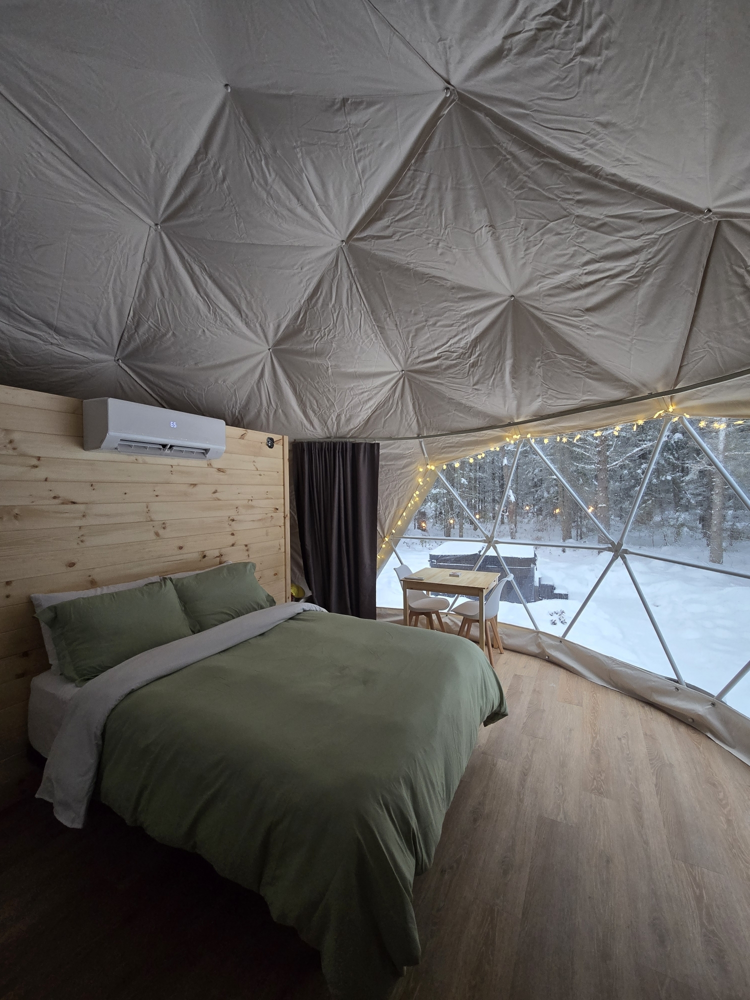
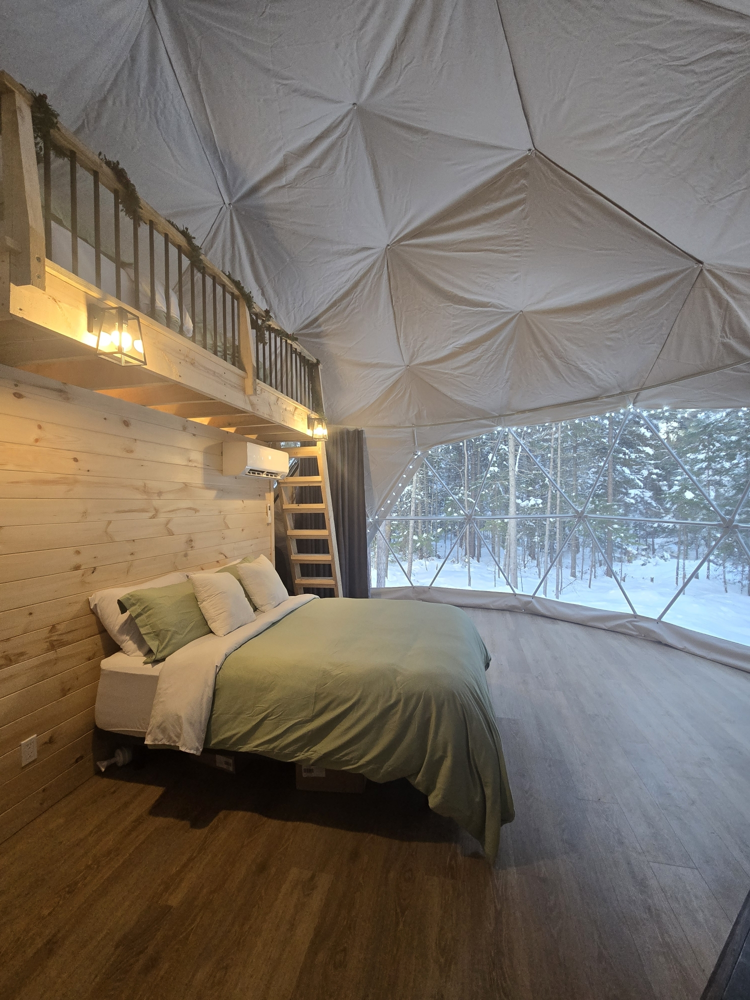
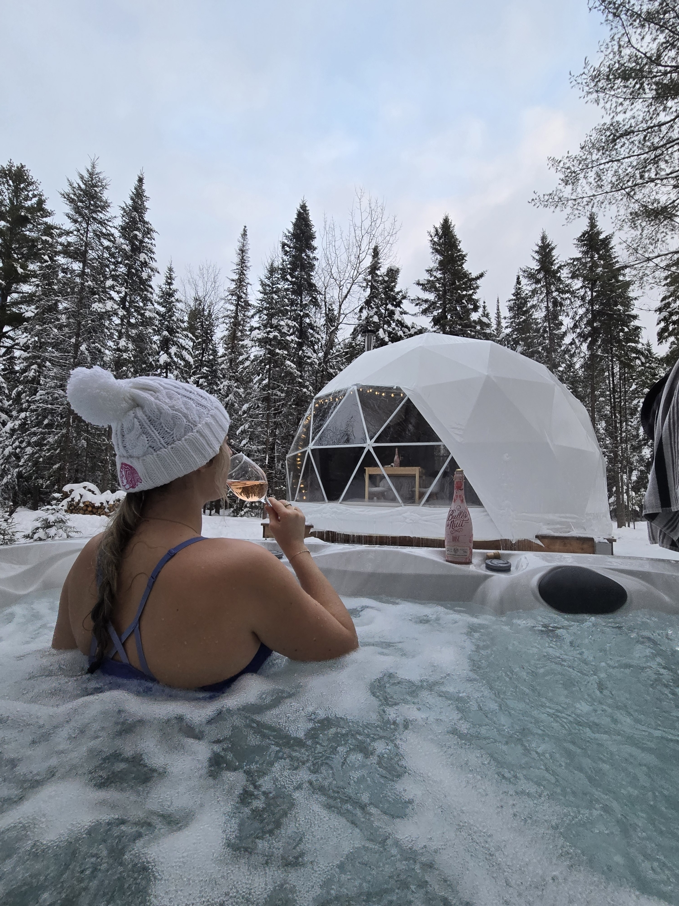
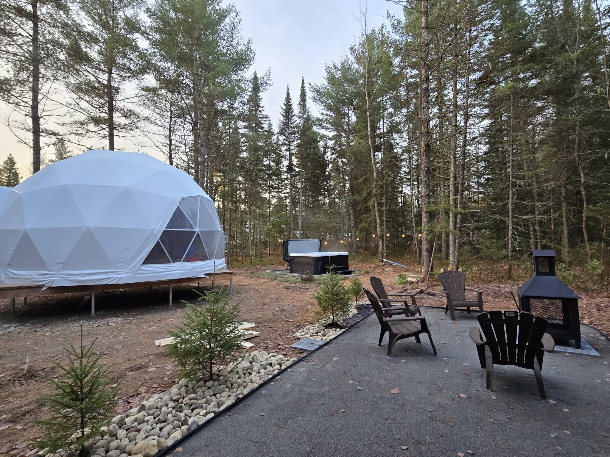
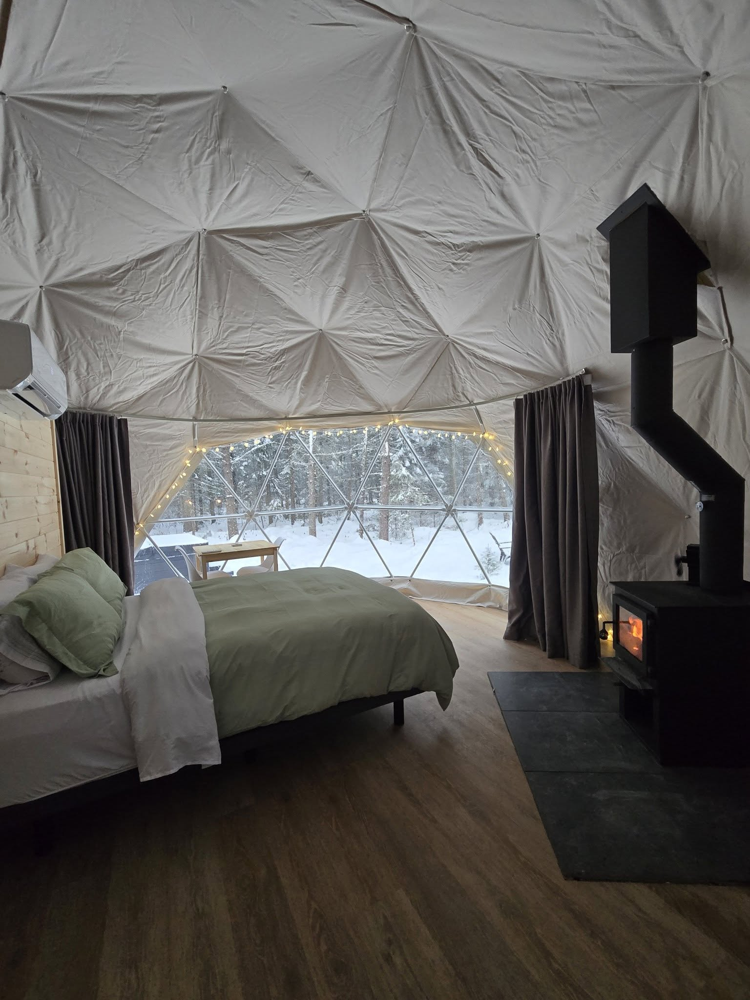
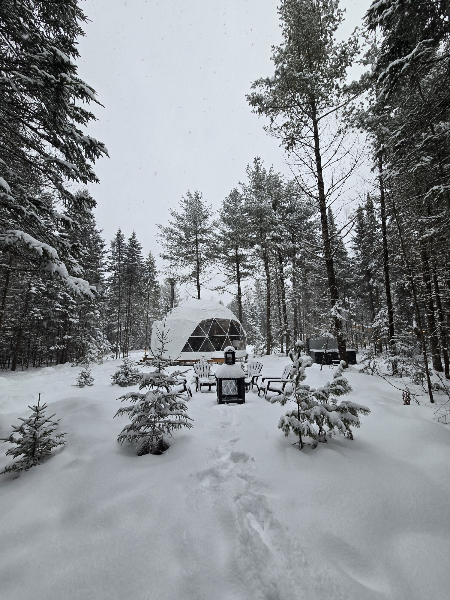
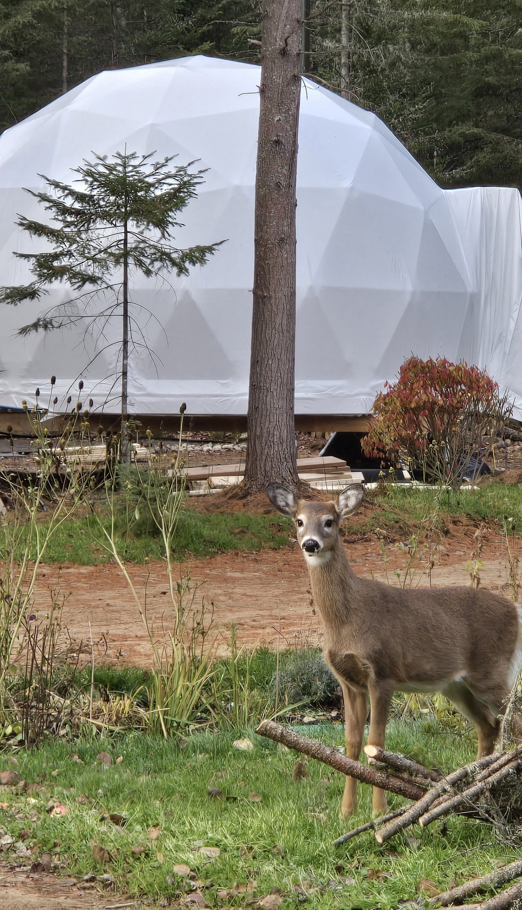

Le Repère du Cerf - 2 personnes
Parfait pour une escapade en couple, avec spa privé et vue dégagée sur la forêt.
Nature, confort et intimité
Vivez une expérience immersive au cœur de la forêt de Saint-Mathieu-du-Parc. une expérience de glamping unique en pleine nature. Profitez d’un hébergement insolite dans un dôme confortable, parfait pour une escapade romantique, un week-end détente, en famille ou entre amis, ou un séjour en forêt.
Ralentissez et profitez d'un séjour mémorable en toute saison.

Parfait pour une escapade en couple, avec spa privé et vue dégagée sur la forêt.

Un espace plus vaste pour les familles ou les amis, tout équipé pour un séjour confortable.
Un aperçu de l'ambiance et des installations sur place.








Profitez d'une expérience différente à chaque saison, du feu de bois en hiver aux nuits étoilées d'été.
Spa, aire de feu, Wi-Fi, cuisine équipée et activités de plein air à proximité immédiate.
Choisissez votre dôme, vos dates et obtenez une estimation instantanée avant de confirmer.